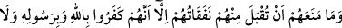
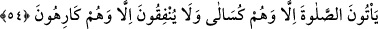

dâiresinden çıkmış olan grupsunuz. Kâfirin infakı kabul edilmez.”. Bu âyette onların
sadakalarının kabul edilmeme gerekçesi olarak fâsık olmaları gösterilmiştir. Bir sonraki
âyette ise “Onlar Allah’ı ve Rasûlü’nü inkâr ettiler...” buyurularak inkar etmeleri
gerekçe gösterilmiştir ki ikisi de aynı mânâyı ifade etmektedir.
Rivayet edildiğine göre Ced b. Kays, nifakından güzel bir tevbe ile tevbe etmiş ve Hz.
Osman’ın (r.a.) hilafeti döneminde ölmüştür.
54. Harcamalarının kabul edilmesine engel olan sadece şudur: Onlar, Allah’ı ve
Rasûlü’nü inkâr ettiler. Namaza da üşene üşene gelirler ve Allah yolunda istemeye
istemeye harcarlar.
Onların Allah yolunda “harcamalarının kabul edilmesine engel olan sadece şudur:
Onlar Allah’ı ve Rasûlü’nü inkâr ettiler.” Yani onların harcamalarının kabul
edilmesine küfürlerinden başka hiçbir şey engel olmamıştır.
Cemaatle “namaza da üşene üşene” ağır bularak “gelirler.”
Kâşifî der ki: “Onlar tembel kimselerdir. Namaza sadâkatle ve kendi istekleriyle
değil istemeye istemeye ve tembellikle gelirler.”
Beğavî demiştir ki: “Münâfıkların asla namazları olmadığı halde, âyette onların
namazda tembellik gösterdikleri nasıl zikredildi?” diye sorulursa bu soruya şöyle cevap
verilir: Âyette onların kişiyi tembelliğe götüren küfür halleri kötülenmektedir. Çünkü
küfür kişiye tembellik getirir, iman ise canlılık ve hareket kazandırır.
“Ve Allah yolunda istemeye istemeye harcarlar.” Şeyhzâde şöyle demiştir:
İbadetleri yerine getirme konusunda müminde bulunan istek ve canlılık, bu ibadetleri
yerine getirmesi durumunda elde edeceği sevab ümidinden ve terk etmesi durumunda
karşılaşacağı cezalandırılma korkusundan kaynaklanmaktadır. Bu ümit ve korku da,
Peygamber Efendimiz (a.s.)’ın Allah katından getirdiği şeylere olan imanından ileri
gelir. Münâfık ise buna inanmaz, dolayısıyla âhiret sevabını ümit etmez, orada göreceği
cezadan da korkmaz. Bu sebeple de namaza gelmekte tembel davranır, sadaka vermek
istemez. Çünkü namaz kılmanın bedeni yormak, sadaka vermenin de malı faydasız yere
zâyî etmek olduğunu düşünür.
Bu âyette tembellik kötülenmiştir. Devamlı tembellik gösteren kimse, emeline
ulaşamaz denilmiştir.
Ebûbekir Harizmî demiştir ki:
Tembel kişiyle hiçbir surette dostluk kurma;
Nice salihler başkasının yüzünden bozulmuştur.